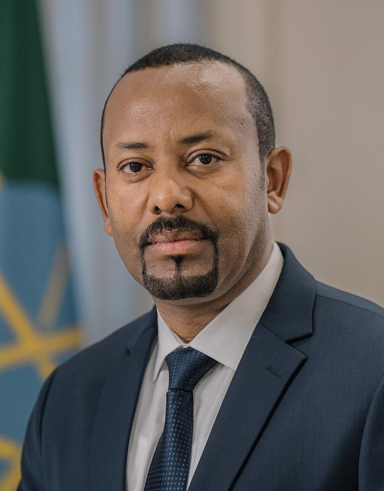

에티오피아 아비 총리 재취임 선서서 「홍해 출구」 거듭 요구… 주변국 긴장 고조
아비 아머드 에티오피아 총리가 의회에서 재임 선서를 하며 홍해 접근권 확보를 강하게 요구했다. 에리트레아·이집트·수단 등 주변국과의 관계가 악화하는 가운데 나온 발언이다.
형덕창 기자 · 2026.10.07
橋국제

아비 아머드 에티오피아 총리가 5일(현지시간) 의회 재임 선서식에서 홍해 진출권 확보를 다시 강조했다. 알자지라에 따르면 아비 총리는 북부 티그라이 지역의 갈등과 지역 긴장 속에서도 항구 확보가 에티오피아 문명 발전에 필수적이라고 말했다.
광고 문의 · 300×250에티오피아는 1990년대 초 에리트레아가 독립하면서 바다로 나가는 출구를 잃은 내륙국이 됐다. 인구 1억 명이 넘는 대국이지만 수출입 물량 대부분을 이웃 지부티 항구에 의존하고 있다.
이번 요구는 에티오피아가 자국 반정부 세력을 지원한다고 의심하는 에리트레아, 그리고 나일강 댐 문제로 얽힌 이집트·수단 등 주변국과의 관계가 나빠지는 가운데 나왔다. 최근에는 연방군과 정부 퇴진을 요구하는 무장 세력 간의 교전도 다시 격해졌다.
홍해 남쪽은 예멘 내전과 해상 안보 문제까지 겹쳐 세계에서 가장 민감한 해역 가운데 하나가 됐다. 에티오피아의 바다 진출 요구가 무력 충돌로 번질 경우 아프리카의 뿔 지역 전체가 흔들릴 수 있다는 우려가 나온다.
에티오피아는 중국의 일대일로 사업으로 아디스아바바와 지부티를 잇는 철도를 개통하는 등 물류망 확충에 공을 들여 왔다. 바다로 가는 길을 넓히려는 시도는 앞으로도 이어질 전망이다.
출처·참고 (사실 확인용 — 본문은 직접 재작성)
· Al Jazeera
· Al Jazeera